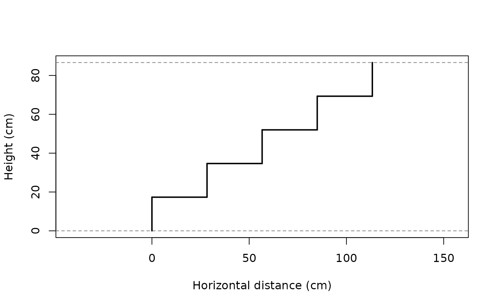
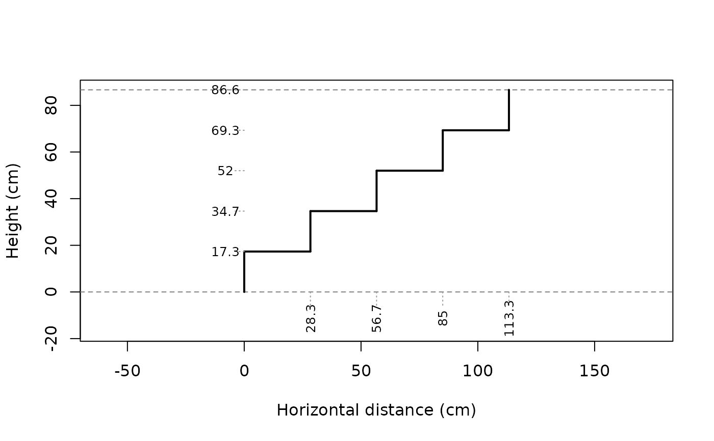

Draws the profile of a staircase from a geometry data frame produced by
build_geometry.
Usage
plot_stair(
geometry,
col_step = "black",
col_floor = "gray50",
show_dimensions = FALSE,
cex_dimensions = 0.8,
...
)
# S3 method for class 'stair_geometry'
plot(x, ...)Arguments
- geometry
A data frame of class
stair_geometryreturned bybuild_geometry.- col_step
Colour used to draw step segments. Default is
"black".- col_floor
Colour used for finished floor reference lines. Default is
"gray50".- show_dimensions
Logical. If
TRUE, cumulative horizontal and vertical dimensions are displayed. Default isFALSE.- cex_dimensions
Character expansion factor for dimension labels. Default is
0.6.- ...
Additional graphical parameters passed to
plot.- x
A
stair_geometryobject.
Details
Each step is represented by a vertical rise and a horizontal going. The lower and upper finished floor levels are displayed as dashed reference lines.
Objects returned by build_geometry inherit from the
stair_geometry class, allowing direct use of
plot().
Examples
geometry <- build_geometry(5, 17.33, rep(28.33, 4))
plot_stair(geometry)

plot(geometry)
plot_stair(geometry, show_dimensions = TRUE)
